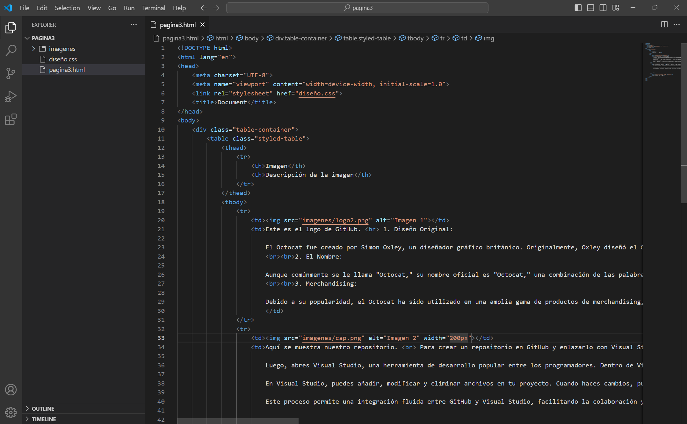

| Imagen | Descripción de la imagen |
|---|---|
| Este es el logo de GitHub. 1. Diseño Original: El Octocat fue creado por Simon Oxley, un diseñador gráfico británico. Originalmente, Oxley diseñó el Octocat para el sitio de imágenes vectoriales iStockphoto, donde GitHub lo encontró y adquirió los derechos de uso. 2. El Nombre: Aunque comúnmente se le llama "Octocat," su nombre oficial es "Octocat," una combinación de las palabras "octopus" (pulpo) y "cat" (gato). Esto se debe a su apariencia única que combina características de ambos animales. El Octocat se ha convertido en un símbolo de la cultura de los desarrolladores y es ampliamente reconocido en la comunidad de código abierto. Su popularidad ha trascendido GitHub, convirtiéndose en un ícono de la programación en general. 3. Merchandising: Debido a su popularidad, el Octocat ha sido utilizado en una amplia gama de productos de merchandising, como camisetas, pegatinas, peluches y más, convirtiéndose en un objeto de coleccionismo para muchos desarrolladores. |
|
| Aquí se muestra nuestro repositorio. Para crear un repositorio en GitHub y enlazarlo con Visual Studio, primero debes ir a GitHub, donde inicias sesión en tu cuenta y creas un nuevo repositorio. Esto implica darle un nombre a tu proyecto, una descripción opcional, y decidir si quieres que sea público o privado. Una vez creado el repositorio, GitHub te proporcionará una URL para clonar el repositorio. Luego, abres Visual Studio, una herramienta de desarrollo popular entre los programadores. Dentro de Visual Studio, puedes clonar el repositorio utilizando la URL proporcionada por GitHub. Este proceso copia el repositorio a tu máquina local, permitiéndote trabajar en tu proyecto desde Visual Studio. En Visual Studio, puedes añadir, modificar y eliminar archivos en tu proyecto. Cuando haces cambios, puedes realizar un "commit" para guardar esos cambios en tu repositorio local. Después, puedes "push" esos commits para enviarlos de vuelta a GitHub, actualizando el repositorio remoto con tus cambios. Este proceso permite una integración fluida entre GitHub y Visual Studio, facilitando la colaboración y el control de versiones en tus proyectos de desarrollo de software. |
|
|  | En esta imagen podemos apreciar un poco del codigo estilizado. Aquí agregamos el codigo en el cual estilizamos más a fondo para que tenga un diseño que se comprenda por "el cliente". la imagen solamente es una muestra para tener una idea de como fue creada esta página dedicada al proceso de nuestro trabajo |